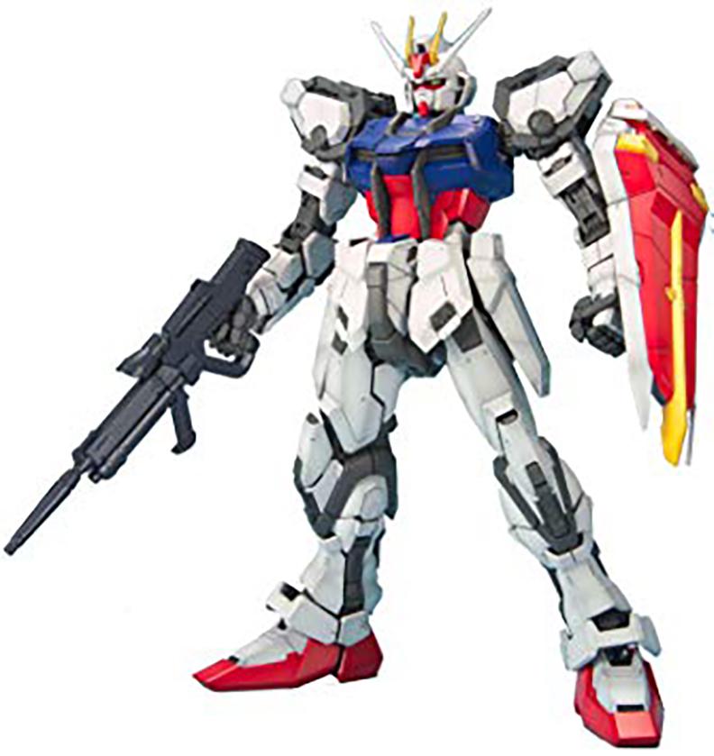

Home | Exia Gundam | Unicorn Gundam | Strike Gundam | Barbatos Gundam
The GAT-X105 Strike Gundam is a prototype multi-mode mobile suit featured in the anime Mobile Suit Gundam SEED. Its primary pilot was Kira Yamato before it was passed down to former mobile armor ace pilot, Mu La Flaga.The Strike Gundam is the most versatile of the five Gundams in the Earth Alliance's G Project and can be easily configured for various types of combat. Using its Striker Packs, it can be outfitted for high mobility combat (Aile Strike), long range assault (Launcher Strike) or melee combat (Sword Strike).
Click Here for more Information